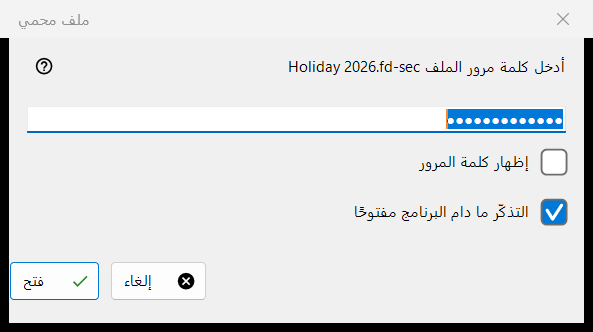
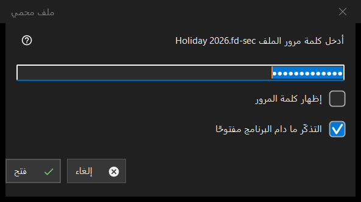

ملف محمي
الغرض من هذه النافذة
يطلب كلمة مرور حاوية محمية، ملف .fd-sec، عندما تظهر على الشاشة. يُفتح عند الضغط على Enter أو النقر على الملف المقفل، ومن تلقاء نفسه عندما تتوقف عند مثل هذا الملف؛ وعرض الشرائح يتخطى الملفات المحمية ويعدّها. يُعرض المحتوى من الذاكرة: لا يُكتب أي شيء مفكوك التشفير على القرص. للعارض الحديث فقط.


بهذا الترتيب
- اكتب كلمة المرور؛ وهي مقنَّعة.
- علّم التذكّر ما دام البرنامج مفتوحًا إذا كانت حاويات أخرى تستخدم كلمة المرور نفسها.
- اضغط الزر فتح (Enter).
- الزر إلغاء (Esc) يترك الملف مقفلاً.
عناصر النافذة
كلمة المرور
يسمّي الطلب الملف. الخيار إظهار كلمة المرور غير مفعّل في البداية. تُستخدم كلمة المرور تمامًا كما كُتبت وتُفحص خارج الخيط الرئيسي، فيبقى العارض مستجيبًا بينما يعمل اشتقاق المفتاح البطيء؛ ولا تُكتب أبدًا في السجل أو في ملف أو في مخزن Windows.
التذكّر ما دام البرنامج مفتوحًا
محدد افتراضيًا. يُبقي كلمة المرور في الذاكرة حتى يُغلق البرنامج، وبعد أن تُفتح بها حاوية فعلاً فقط؛ ثم يجرّبها العارض بصمت على الحاويات التالية ولا يسأل إلا عندما لا تناسب.
الرفض وكلمة المرور الفارغة
بعد محاولة فاشلة تعود النافذة ومعها السطر: لم يُفتح: قد تكون كلمة المرور خاطئة، وقد لا يكون الملف حاوية أصلًا، وقد يكون جرى تعديله. هذه الحالات تبدو متماثلة عن قصد: لا يمكن التمييز بين مفتاح خاطئ وبايت تغيّر. الحاوية التالفة أو غير المدعومة تحصل على رسالتها الخاصة ولا تستدعي نافذة كلمة المرور. كلمة المرور الفارغة مقبولة: أول ضغطة على Enter تعرض رسالة والثانية تفتح الملف، والرسالة هي: كلمة المرور الفارغة ليست حماية: هذا الملف مخفي عن النظرة العابرة فقط. اضغط مرة أخرى لفتحه.
إلغاء
الزر إلغاء وEsc وزر إغلاق النافذة مسار واحد ولا يغيّر شيئًا. يعرض الملف الرسالة: يلزم إدخال كلمة مرور - اضغط Enter أو انقر الملف، ولا يسأل العارض عنها ثانيةً ما دام ذلك المجلد مفتوحًا. أما Enter أو النقر على الملف فيسأل من جديد.